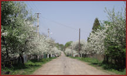
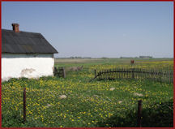
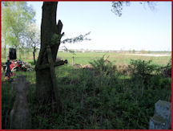
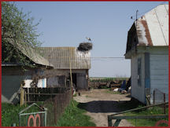

The following are pictures from the Rowno Parish. Click on the thumbnail view for an enlarged view of the picture.
|  |  | |||
| The village of Tomaschew, easterly from Derashno, is noted on old maps. Today it is merged with the southeastern end of Postojno. - courtesy of Jerry Frank |
Most villages are on a single street, as is Anieluwka (today known as Hannivka) a short distance west of Tomashew. Cherry trees are in bloom. - courtesy of Jerry Frank |
From Anieluwka looking across the fields to Postojno in the distance. - courtesy of Jerry Frank |
||
|  |  | |||
| Cemetery at Anieluwka with the village in the distance. There are no identifiable German graves but there is an unkempt area on the east side where they may have been buried. - courtesy of Jerry Frank |
Stork nest on barn in Anieluwka. Note the yellow pipe coming out of the ground at the shed on the left, fastened to the exterior wall, crossing the driveway and then entering the house. This is their natural gas line. - courtesy of Jerry Frank |
{kind=link}
{kind=link}
{kind=link}
{kind=link}
{kind=link}